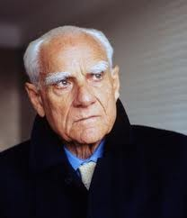

.Moravia [1907-1990]
Ngồi thụt sâu trên chiếc đi văng, trong một căn nhà nhìn xuống dòng sông Tiber chảy qua thành Roma, Moravia [1907-1990] nhà văn lớn của nước Ý sẵn sàng nói về mọi chuyện. Tuy vậy ông cứ nhắc đi nhắc lại rằng ông rất ghét cái thói khái quát hóa, tức là cái lối nói chung chung. Đối với ông, sự quan tâm sâu sắc vẫn là từng con người một chứ không phải là xã hội nói chung, bởi vì chính những con người cụ thể là kẻ chịu trách nhiệm chính trước thời cuộc.
Cuối năm 1987, tờ báo Pháp Buổi sáng (Le Matin) đã dành ba trang khổ lớn để đăng một loạt bài phỏng vấn nhà văn này tại nhà riêng của ông. Nội dung thật đa dạng, nó nói lên những tâm trạng và những băn khoăn của nhà văn đối với thời đại, với cuộc sống đang diễn ra.
Khi đề cập đến các vấn đề kinh tế, chính trị và nạn Mafia ở Ý, ông thường nói rằng ông trước hết chỉ là một nhà văn, và sau đó tham gia hội họa và điện ảnh, và cả bom nguyên tử (ông muốn nói cuộc đấu tranh mà ông tham gia chống lại nguy cơ hạt nhân). Ông đi Liên Xô tháng 10 năm 1986, rồi đi Nhật Bản để trao đổi với các nhà sư, các tín đồ đạo Thiền, các nhà văn, và đến nước Đức gặp các nhà quân sự. Theo ông, người ta nói nhiều đến chủ đề chiến tranh, nhưng viết ra chẳng được bao nhiêu.
Về chủ đề này, Moravia đã nhắc lại câu nói của cố thủ tướng Thụy Điển Olof Palme: “Không trông cậy gì vào nhà nước mà phải thương đến người dân”. Cho nên tôi sử dụng danh tiếng của mình để góp phần thức tỉnh lương tri dân chúng về những nguy cơ đang đe dọa họ. Và sự đóng góp của tôi là ít ỏi.
Thế mà nhà văn này lại là tác giả của cuốn tiểu thuyết Lãnh đạm. Người ta hỏi ông tại sao lại thế, ông phân bua thế này: “Không, tôi là kẻ từng chịu quá nhiều cái thói lạnh nhạt của người đời, và đã viết một cuốn sách để chống lại nó. Điều mà tôi gọi là sự hờ hững chính là một hình thái của tâm trạng âu lo mà tôi đã nói đến trong các tác phẩm của tôi, chẳng hạn trong cuốn Âu lo”.
Truy cứu cội nguồn của cảm giác này, Môravia cho biết đấy là sự phát triển của nghề viết văn của ông “Khi người ta hỏi tôi phải chăng tôi là một kẻ ủng hộ hòa bình, tôi liền trả lời không, tôi chỉ là một nhà động vật học, tôi muốn bảo vệ các giống loài”. Tôi không quan tâm đến chủ nghĩa hòa bình, nó là một từ đã cũ. Tôi cảm thấy rằng tất cả vấn đề mà tôi quan tâm, đấy là vấn đề quả bom, một thứ bệnh tâm lý.
Theo ông trái bom là một thứ bệnh hoạn, không phải là một biến cố bất thường. “Một thứ bệnh vốn tồn tại trước khi người ta chế tạo ra quả bom, và là căn bệnh giết chết thế giới này. Đấy cũng là điều xảy ra trong Đại chiến II, một sự lôi cuốn của con người vào con đường tự sát”.
Ông đã đến Hiroshima. Nhưng không hoàn toàn ngạc nhiên trước thảm họa này mà cảm thấy quang cảnh đó có một cái gì thân thuộc. Nhắc lại thời Đại chiến II, với hình ảnh “Người Đức ra trận với những bông hoa cài trên súng”, ông nói đấy là “cuộc hôn nhân với cái chết, là hành trình đến cái chết”.
Còn đối với những đồng bào Ý của ông, ông cho rằng họ không quen thuộc với cái tâm lý chết chóc. “Họ không thích nghĩ đến chuyện đó, bởi đấy là một ý nghĩ khó chịu và vô ích. Nhưng họ đã lầm, trong một lúc nào đó cần phải có ý thức về điều này”.
Moravia thích bàn đến điện ảnh. Theo ông điện ảnh đang trải qua một cuộc khủng hoảng, vì tất cả những bậc thầy của nền điện ảnh hiện thực mới của Ý đều đã qua đời hay đã già nua. Nói một cách hình ảnh, nền điện ảnh Ý như một cây có nhiều cành để tồn tại mà người ta đã đốn đi khá nhiều. Người ta đã thu hẹp những tham vọng của nó. Có nhiều đạo diễn tốt, nhưng người ta không có được những tham vọng như Fellini, Rosselini, Visconti, Fasolini…
Về sự nghiệp văn học của ông, Moravia cho rằng ngôn ngữ Ý không biết đến cuộc cách mạng của những năm khai sáng. Vì vậy người ta viết theo phong cách Phục hưng cho đến 40-50 năm trước đây. Tiếp đó cuộc cách mạng đã diễn ra. Về phần ông, ông viết như là một tác giả sau cuộc cách mạng về ngôn từ đó. Tại sao nó lại diễn ra quá muộn đến thế? Ông trả lời: “Bởi vì người Ý không nói tiếng Ý. Tiếng Ý là một ngôn ngữ văn học, người ta viết nó nhưng khi người ta nói thì dùng tiếng địa phương: Tiếng vùng Venise, Napoli, Milan... Có một ngôn ngữ Ý đích thực đang tồn tại, giống như sự thống nhất của nước Ý. Có ngôn ngữ Ý nhưng nhiều nhà văn cứ tiếp tục dùng một thứ ngôn ngữ giả tạo. Tiếng Ý là một ngôn ngữ rất khó, chỉ vì nó không được hệ thống hóa từ thế kỷ XVIII như tiếng Pháp. Nó biến đổi không ngừng. Người ta viết một cuốn sách vào năm 1960, hai mươi năm sau người ta đọc lại và thấy rằng nó khác đi. Nói thế nào nhỉ? Nó bị han gỉ đi như một đồng tiền bằng đồng ngâm trong nước”.
Trước ý kiến cho rằng các nhà văn Ý ngày nay là những nhà khảo luận nhiều hơn là tiểu thuyết gia, Moravia trả lời rằng ở Ý chưa bao giờ có nhiều nhà viết tiểu thuyết. “Tôi là tiểu thuyết gia, gần như là một tiểu thuyết gia bởi vì những tiểu thuyết của tôi là những vở kịch ngụy trang bằng tiểu thuyết”. Nói chung tài năng văn học Ý là ở thể loại ký sự hơn truyện ngắn. Chúng tôi có một nhà văn lớn về truyện ngắn Boccaccio. Ý có một truyền thống lớn về thể loại truyện ngắn nước Ý có phần nào có tính chất phương Đông về văn học mà truyện ngắn lại từ phương Đông tới.
Moravia còn quan tâm đến hội họa và sân khấu. Moravia cho rằng đất nước này là xứ sở của hội họa. Dân tộc Ý không phải là một đầu óc phân tích mà tổng hợp. Phân tích là đặc tính của triết học, còn tổng hợp là khả năng nắm bắt sự vật một cách tức thời, đó là cái chất của Ý.
Người Ý không tin vào luận lý mà tin vào thực tế, đấy là một điều khác biệt. Nước Ý là một nước có nền điện ảnh tài năng. Nếu có một tá nhạc sĩ, thì nền nhạc đó sẽ là nhạc Ý. Khi người ta nói về một xứ sở, người ta quên mất rằng chính những con người đã làm nên xứ sở. Vâng, có những xã hội đang phát triển… nhưng vinh quang nghệ thuật thì tùy thuộc chặt chẽ vào những cá nhân, những người đánh thức được khả năng sáng tạo.
Về bản thân mình, Moravia nói: “Tôi không thích những cuốn sách của tôi, mà thích sách của người khác. Những tác phẩm của tôi không đem lại cho tôi chút ngạc nhiên nào, trong khi tác phẩm người khác tôi tìm thấy những điều mới. Và người ta lại muốn viết tốt nhất cái điều mà họ đã viết”.